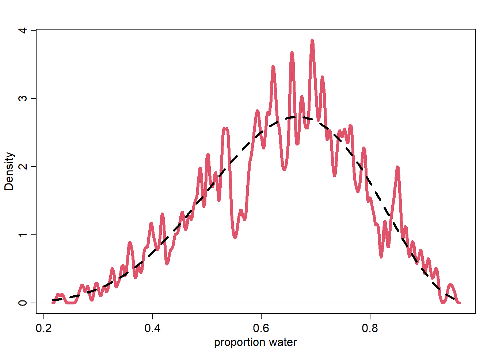

<!DOCTYPE html>
<html xmlns="http://www.w3.org/1999/xhtml" lang="en" xml:lang="en"><head>

<meta charset="utf-8">
<meta name="generator" content="quarto-1.2.269">

<meta name="viewport" content="width=device-width, initial-scale=1.0, user-scalable=yes">


<title>Lecture 02</title>
<style>
code{white-space: pre-wrap;}
span.smallcaps{font-variant: small-caps;}
div.columns{display: flex; gap: min(4vw, 1.5em);}
div.column{flex: auto; overflow-x: auto;}
div.hanging-indent{margin-left: 1.5em; text-indent: -1.5em;}
ul.task-list{list-style: none;}
ul.task-list li input[type="checkbox"] {
  width: 0.8em;
  margin: 0 0.8em 0.2em -1.6em;
  vertical-align: middle;
}
pre > code.sourceCode { white-space: pre; position: relative; }
pre > code.sourceCode > span { display: inline-block; line-height: 1.25; }
pre > code.sourceCode > span:empty { height: 1.2em; }
.sourceCode { overflow: visible; }
code.sourceCode > span { color: inherit; text-decoration: inherit; }
div.sourceCode { margin: 1em 0; }
pre.sourceCode { margin: 0; }
@media screen {
div.sourceCode { overflow: auto; }
}
@media print {
pre > code.sourceCode { white-space: pre-wrap; }
pre > code.sourceCode > span { text-indent: -5em; padding-left: 5em; }
}
pre.numberSource code
  { counter-reset: source-line 0; }
pre.numberSource code > span
  { position: relative; left: -4em; counter-increment: source-line; }
pre.numberSource code > span > a:first-child::before
  { content: counter(source-line);
    position: relative; left: -1em; text-align: right; vertical-align: baseline;
    border: none; display: inline-block;
    -webkit-touch-callout: none; -webkit-user-select: none;
    -khtml-user-select: none; -moz-user-select: none;
    -ms-user-select: none; user-select: none;
    padding: 0 4px; width: 4em;
    color: #aaaaaa;
  }
pre.numberSource { margin-left: 3em; border-left: 1px solid #aaaaaa;  padding-left: 4px; }
div.sourceCode
  {   }
@media screen {
pre > code.sourceCode > span > a:first-child::before { text-decoration: underline; }
}
code span.al { color: #ff0000; font-weight: bold; } /* Alert */
code span.an { color: #60a0b0; font-weight: bold; font-style: italic; } /* Annotation */
code span.at { color: #7d9029; } /* Attribute */
code span.bn { color: #40a070; } /* BaseN */
code span.bu { color: #008000; } /* BuiltIn */
code span.cf { color: #007020; font-weight: bold; } /* ControlFlow */
code span.ch { color: #4070a0; } /* Char */
code span.cn { color: #880000; } /* Constant */
code span.co { color: #60a0b0; font-style: italic; } /* Comment */
code span.cv { color: #60a0b0; font-weight: bold; font-style: italic; } /* CommentVar */
code span.do { color: #ba2121; font-style: italic; } /* Documentation */
code span.dt { color: #902000; } /* DataType */
code span.dv { color: #40a070; } /* DecVal */
code span.er { color: #ff0000; font-weight: bold; } /* Error */
code span.ex { } /* Extension */
code span.fl { color: #40a070; } /* Float */
code span.fu { color: #06287e; } /* Function */
code span.im { color: #008000; font-weight: bold; } /* Import */
code span.in { color: #60a0b0; font-weight: bold; font-style: italic; } /* Information */
code span.kw { color: #007020; font-weight: bold; } /* Keyword */
code span.op { color: #666666; } /* Operator */
code span.ot { color: #007020; } /* Other */
code span.pp { color: #bc7a00; } /* Preprocessor */
code span.sc { color: #4070a0; } /* SpecialChar */
code span.ss { color: #bb6688; } /* SpecialString */
code span.st { color: #4070a0; } /* String */
code span.va { color: #19177c; } /* Variable */
code span.vs { color: #4070a0; } /* VerbatimString */
code span.wa { color: #60a0b0; font-weight: bold; font-style: italic; } /* Warning */
</style>


<script src="Lecture 02_files/libs/clipboard/clipboard.min.js"></script>
<script src="Lecture 02_files/libs/quarto-html/quarto.js"></script>
<script src="Lecture 02_files/libs/quarto-html/popper.min.js"></script>
<script src="Lecture 02_files/libs/quarto-html/tippy.umd.min.js"></script>
<script src="Lecture 02_files/libs/quarto-html/anchor.min.js"></script>
<link href="Lecture 02_files/libs/quarto-html/tippy.css" rel="stylesheet">
<link href="Lecture 02_files/libs/quarto-html/quarto-syntax-highlighting.css" rel="stylesheet" id="quarto-text-highlighting-styles">
<script src="Lecture 02_files/libs/bootstrap/bootstrap.min.js"></script>
<link href="Lecture 02_files/libs/bootstrap/bootstrap-icons.css" rel="stylesheet">
<link href="Lecture 02_files/libs/bootstrap/bootstrap.min.css" rel="stylesheet" id="quarto-bootstrap" data-mode="light">


</head>

<body class="fullcontent">

<div id="quarto-content" class="page-columns page-rows-contents page-layout-article">

<main class="content" id="quarto-document-content">

<header id="title-block-header" class="quarto-title-block default">
<div class="quarto-title">
<h1 class="title">Lecture 02</h1>
</div>


<div class="quarto-title-meta">

    
  
    
  </div>
  

</header>

<section id="slides" class="level2">
<h2 class="anchored" data-anchor-id="slides">Slides</h2>
<div class="cell">
<div class="sourceCode cell-code" id="cb1"><pre class="sourceCode r code-with-copy"><code class="sourceCode r"><span id="cb1-1"><a href="#cb1-1" aria-hidden="true" tabindex="-1"></a>pacman<span class="sc">::</span><span class="fu">p_load</span>(ape, animint,bayesplot, brms, broom, dagitty, devtools, flextable, GGally, ggdag, ggdark, ggmcmc, ggrepel, ggthemes, ggtree, ghibli, gtools, invgamma, loo, patchwork, posterior, psych, rcartocolor, Rcpp, remotes, rethinking, rstan, santoku, StanHeaders, statebins, tidybayes, tidyverse, viridis, viridisLite, wesanderson)</span></code><button title="Copy to Clipboard" class="code-copy-button"><i class="bi"></i></button></pre></div>
<div class="cell-output cell-output-stderr">
<pre><code>Installing package into 'C:/Users/dmend/AppData/Local/R/win-library/4.2'
(as 'lib' is unspecified)</code></pre>
</div>
<div class="cell-output cell-output-stderr">
<pre><code>Warning: package 'animint' is not available for this version of R

A version of this package for your version of R might be available elsewhere,
see the ideas at
https://cran.r-project.org/doc/manuals/r-patched/R-admin.html#Installing-packages</code></pre>
</div>
<div class="cell-output cell-output-stderr">
<pre><code>Warning: unable to access index for repository http://www.stats.ox.ac.uk/pub/RWin/bin/windows/contrib/4.2:
  cannot open URL 'http://www.stats.ox.ac.uk/pub/RWin/bin/windows/contrib/4.2/PACKAGES'</code></pre>
</div>
<div class="cell-output cell-output-stderr">
<pre><code>Warning in p_install(package, character.only = TRUE, ...):</code></pre>
</div>
<div class="cell-output cell-output-stderr">
<pre><code>Warning in library(package, lib.loc = lib.loc, character.only = TRUE,
logical.return = TRUE, : there is no package called 'animint'</code></pre>
</div>
<div class="cell-output cell-output-stderr">
<pre><code>Installing package into 'C:/Users/dmend/AppData/Local/R/win-library/4.2'
(as 'lib' is unspecified)</code></pre>
</div>
<div class="cell-output cell-output-stderr">
<pre><code>Warning: unable to access index for repository http://www.stats.ox.ac.uk/pub/RWin/bin/windows/contrib/4.2:
  cannot open URL 'http://www.stats.ox.ac.uk/pub/RWin/bin/windows/contrib/4.2/PACKAGES'</code></pre>
</div>
<div class="cell-output cell-output-stdout">
<pre><code>package 'bayesplot' successfully unpacked and MD5 sums checked

The downloaded binary packages are in
    C:\Users\dmend\AppData\Local\Temp\RtmpOMkrsq\downloaded_packages</code></pre>
</div>
<div class="cell-output cell-output-stderr">
<pre><code>
bayesplot installed
Installing package into 'C:/Users/dmend/AppData/Local/R/win-library/4.2'
(as 'lib' is unspecified)</code></pre>
</div>
<div class="cell-output cell-output-stderr">
<pre><code>Warning: unable to access index for repository http://www.stats.ox.ac.uk/pub/RWin/bin/windows/contrib/4.2:
  cannot open URL 'http://www.stats.ox.ac.uk/pub/RWin/bin/windows/contrib/4.2/PACKAGES'</code></pre>
</div>
<div class="cell-output cell-output-stdout">
<pre><code>package 'brms' successfully unpacked and MD5 sums checked

The downloaded binary packages are in
    C:\Users\dmend\AppData\Local\Temp\RtmpOMkrsq\downloaded_packages</code></pre>
</div>
<div class="cell-output cell-output-stderr">
<pre><code>
brms installed
Installing package into 'C:/Users/dmend/AppData/Local/R/win-library/4.2'
(as 'lib' is unspecified)</code></pre>
</div>
<div class="cell-output cell-output-stderr">
<pre><code>Warning: unable to access index for repository http://www.stats.ox.ac.uk/pub/RWin/bin/windows/contrib/4.2:
  cannot open URL 'http://www.stats.ox.ac.uk/pub/RWin/bin/windows/contrib/4.2/PACKAGES'</code></pre>
</div>
<div class="cell-output cell-output-stdout">
<pre><code>package 'broom' successfully unpacked and MD5 sums checked

The downloaded binary packages are in
    C:\Users\dmend\AppData\Local\Temp\RtmpOMkrsq\downloaded_packages</code></pre>
</div>
<div class="cell-output cell-output-stderr">
<pre><code>
broom installed
Installing package into 'C:/Users/dmend/AppData/Local/R/win-library/4.2'
(as 'lib' is unspecified)</code></pre>
</div>
<div class="cell-output cell-output-stderr">
<pre><code>Warning: unable to access index for repository http://www.stats.ox.ac.uk/pub/RWin/bin/windows/contrib/4.2:
  cannot open URL 'http://www.stats.ox.ac.uk/pub/RWin/bin/windows/contrib/4.2/PACKAGES'</code></pre>
</div>
<div class="cell-output cell-output-stdout">
<pre><code>package 'GGally' successfully unpacked and MD5 sums checked

The downloaded binary packages are in
    C:\Users\dmend\AppData\Local\Temp\RtmpOMkrsq\downloaded_packages</code></pre>
</div>
<div class="cell-output cell-output-stderr">
<pre><code>
GGally installed
Installing package into 'C:/Users/dmend/AppData/Local/R/win-library/4.2'
(as 'lib' is unspecified)</code></pre>
</div>
<div class="cell-output cell-output-stderr">
<pre><code>Warning: unable to access index for repository http://www.stats.ox.ac.uk/pub/RWin/bin/windows/contrib/4.2:
  cannot open URL 'http://www.stats.ox.ac.uk/pub/RWin/bin/windows/contrib/4.2/PACKAGES'</code></pre>
</div>
<div class="cell-output cell-output-stdout">
<pre><code>package 'ggdag' successfully unpacked and MD5 sums checked

The downloaded binary packages are in
    C:\Users\dmend\AppData\Local\Temp\RtmpOMkrsq\downloaded_packages</code></pre>
</div>
<div class="cell-output cell-output-stderr">
<pre><code>
ggdag installed
Installing package into 'C:/Users/dmend/AppData/Local/R/win-library/4.2'
(as 'lib' is unspecified)</code></pre>
</div>
<div class="cell-output cell-output-stderr">
<pre><code>Warning: unable to access index for repository http://www.stats.ox.ac.uk/pub/RWin/bin/windows/contrib/4.2:
  cannot open URL 'http://www.stats.ox.ac.uk/pub/RWin/bin/windows/contrib/4.2/PACKAGES'</code></pre>
</div>
<div class="cell-output cell-output-stdout">
<pre><code>package 'ggmcmc' successfully unpacked and MD5 sums checked

The downloaded binary packages are in
    C:\Users\dmend\AppData\Local\Temp\RtmpOMkrsq\downloaded_packages</code></pre>
</div>
<div class="cell-output cell-output-stderr">
<pre><code>
ggmcmc installed
Installing package into 'C:/Users/dmend/AppData/Local/R/win-library/4.2'
(as 'lib' is unspecified)</code></pre>
</div>
<div class="cell-output cell-output-stderr">
<pre><code>Warning: package 'ggtree' is not available for this version of R

A version of this package for your version of R might be available elsewhere,
see the ideas at
https://cran.r-project.org/doc/manuals/r-patched/R-admin.html#Installing-packages</code></pre>
</div>
<div class="cell-output cell-output-stderr">
<pre><code>Warning: unable to access index for repository http://www.stats.ox.ac.uk/pub/RWin/bin/windows/contrib/4.2:
  cannot open URL 'http://www.stats.ox.ac.uk/pub/RWin/bin/windows/contrib/4.2/PACKAGES'</code></pre>
</div>
<div class="cell-output cell-output-stderr">
<pre><code>
ggtree installed
Installing package into 'C:/Users/dmend/AppData/Local/R/win-library/4.2'
(as 'lib' is unspecified)</code></pre>
</div>
<div class="cell-output cell-output-stderr">
<pre><code>Warning: unable to access index for repository http://www.stats.ox.ac.uk/pub/RWin/bin/windows/contrib/4.2:
  cannot open URL 'http://www.stats.ox.ac.uk/pub/RWin/bin/windows/contrib/4.2/PACKAGES'</code></pre>
</div>
<div class="cell-output cell-output-stdout">
<pre><code>package 'tidybayes' successfully unpacked and MD5 sums checked

The downloaded binary packages are in
    C:\Users\dmend\AppData\Local\Temp\RtmpOMkrsq\downloaded_packages</code></pre>
</div>
<div class="cell-output cell-output-stderr">
<pre><code>
tidybayes installed</code></pre>
</div>
<div class="cell-output cell-output-stderr">
<pre><code>The following packages have been unloaded:
tidyverse</code></pre>
</div>
<div class="cell-output cell-output-stderr">
<pre><code>Installing package into 'C:/Users/dmend/AppData/Local/R/win-library/4.2'
(as 'lib' is unspecified)</code></pre>
</div>
<div class="cell-output cell-output-stderr">
<pre><code>also installing the dependencies 'cli', 'purrr'</code></pre>
</div>
<div class="cell-output cell-output-stderr">
<pre><code>Warning: unable to access index for repository http://www.stats.ox.ac.uk/pub/RWin/bin/windows/contrib/4.2:
  cannot open URL 'http://www.stats.ox.ac.uk/pub/RWin/bin/windows/contrib/4.2/PACKAGES'</code></pre>
</div>
<div class="cell-output cell-output-stdout">
<pre><code>package 'cli' successfully unpacked and MD5 sums checked</code></pre>
</div>
<div class="cell-output cell-output-stderr">
<pre><code>Warning: cannot remove prior installation of package 'cli'</code></pre>
</div>
<div class="cell-output cell-output-stderr">
<pre><code>Warning in file.copy(savedcopy, lib, recursive = TRUE): problem copying
C:\Users\dmend\AppData\Local\R\win-library\4.2\00LOCK\cli\libs\x64\cli.dll to
C:\Users\dmend\AppData\Local\R\win-library\4.2\cli\libs\x64\cli.dll: Permission
denied</code></pre>
</div>
<div class="cell-output cell-output-stderr">
<pre><code>Warning: restored 'cli'</code></pre>
</div>
<div class="cell-output cell-output-stdout">
<pre><code>package 'purrr' successfully unpacked and MD5 sums checked</code></pre>
</div>
<div class="cell-output cell-output-stderr">
<pre><code>Warning: cannot remove prior installation of package 'purrr'</code></pre>
</div>
<div class="cell-output cell-output-stderr">
<pre><code>Warning in file.copy(savedcopy, lib, recursive = TRUE): problem copying
C:\Users\dmend\AppData\Local\R\win-library\4.2\00LOCK\purrr\libs\x64\purrr.dll
to C:\Users\dmend\AppData\Local\R\win-library\4.2\purrr\libs\x64\purrr.dll:
Permission denied</code></pre>
</div>
<div class="cell-output cell-output-stderr">
<pre><code>Warning: restored 'purrr'</code></pre>
</div>
<div class="cell-output cell-output-stdout">
<pre><code>package 'tidyverse' successfully unpacked and MD5 sums checked

The downloaded binary packages are in
    C:\Users\dmend\AppData\Local\Temp\RtmpOMkrsq\downloaded_packages</code></pre>
</div>
<div class="cell-output cell-output-stderr">
<pre><code>
tidyverse installed</code></pre>
</div>
<div class="cell-output cell-output-stderr">
<pre><code>Warning in pacman::p_load(ape, animint, bayesplot, brms, broom, dagitty, : Failed to install/load:
animint, bayesplot, brms, broom, GGally, ggdag, ggmcmc, ggtree, tidybayes, tidyverse</code></pre>
</div>
</div>
<p>Steps:</p>
<ol type="1">
<li><p>Define generative model of the sample</p>
<ul>
<li><p>We have 4 variables:</p>
<ul>
<li>p: proportion of water (estimand)</li>
<li>N: number of tosses</li>
<li>W: water observations</li>
<li>L: land observations</li>
</ul></li>
<li><p>Influences:</p>
<ul>
<li><p>N-&gt;W ; N-&gt;L; p-&gt;W; p-&gt;L</p></li>
<li><p>W,L = f(p,N)</p></li>
</ul></li>
</ul></li>
<li><p>Define a specific estimand</p>
<ul>
<li>p</li>
</ul></li>
<li><p>Design a statistical way to produce estimand</p>
<ul>
<li><p>W,L = (4p)<sup>W</sup> + (4-4p)<sup>L</sup></p>
<div class="cell">
<div class="sourceCode cell-code" id="cb47"><pre class="sourceCode r code-with-copy"><code class="sourceCode r"><span id="cb47-1"><a href="#cb47-1" aria-hidden="true" tabindex="-1"></a>sample <span class="ot">&lt;-</span> <span class="fu">c</span>(<span class="st">"W"</span>,<span class="st">"L"</span>,<span class="st">"W"</span>,<span class="st">"W"</span>,<span class="st">"W"</span>,<span class="st">"L"</span>,<span class="st">"W"</span>,<span class="st">"L"</span>,<span class="st">"W"</span>)</span>
<span id="cb47-2"><a href="#cb47-2" aria-hidden="true" tabindex="-1"></a>W <span class="ot">&lt;-</span> <span class="fu">sum</span>(sample<span class="sc">==</span><span class="st">"W"</span>)</span>
<span id="cb47-3"><a href="#cb47-3" aria-hidden="true" tabindex="-1"></a>L <span class="ot">&lt;-</span> <span class="fu">sum</span>(sample<span class="sc">==</span><span class="st">"L"</span>)</span>
<span id="cb47-4"><a href="#cb47-4" aria-hidden="true" tabindex="-1"></a>p <span class="ot">&lt;-</span> <span class="fu">c</span>(<span class="dv">0</span>,<span class="fl">0.25</span>,<span class="fl">0.5</span>,<span class="fl">0.75</span>,<span class="dv">1</span>)</span>
<span id="cb47-5"><a href="#cb47-5" aria-hidden="true" tabindex="-1"></a>ways <span class="ot">&lt;-</span> <span class="fu">sapply</span>(p, <span class="cf">function</span>(q) (q<span class="sc">*</span><span class="dv">4</span>)<span class="sc">^</span>W<span class="sc">*</span>((<span class="dv">4-4</span><span class="sc">*</span>q)<span class="sc">^</span>L))</span>
<span id="cb47-6"><a href="#cb47-6" aria-hidden="true" tabindex="-1"></a>prob <span class="ot">&lt;-</span> ways<span class="sc">/</span><span class="fu">sum</span>(ways)</span>
<span id="cb47-7"><a href="#cb47-7" aria-hidden="true" tabindex="-1"></a><span class="fu">cbind</span>(p, ways, prob)</span></code><button title="Copy to Clipboard" class="code-copy-button"><i class="bi"></i></button></pre></div>
<div class="cell-output cell-output-stdout">
<pre><code>        p ways       prob
[1,] 0.00    0 0.00000000
[2,] 0.25   27 0.02129338
[3,] 0.50  512 0.40378549
[4,] 0.75  729 0.57492114
[5,] 1.00    0 0.00000000</code></pre>
</div>
</div></li>
</ul></li>
<li><p>Test 3 using 1</p>
<div class="cell">
<div class="sourceCode cell-code" id="cb49"><pre class="sourceCode r code-with-copy"><code class="sourceCode r"><span id="cb49-1"><a href="#cb49-1" aria-hidden="true" tabindex="-1"></a><span class="co"># function to toss a globe covered in water N times</span></span>
<span id="cb49-2"><a href="#cb49-2" aria-hidden="true" tabindex="-1"></a>sim_globe <span class="ot">&lt;-</span> <span class="cf">function</span>(<span class="at">p=</span><span class="fl">0.7</span>, <span class="at">N=</span><span class="dv">9</span>){</span>
<span id="cb49-3"><a href="#cb49-3" aria-hidden="true" tabindex="-1"></a>  <span class="fu">sample</span>(<span class="fu">c</span>(<span class="st">"W"</span>,<span class="st">"L"</span>), <span class="at">size=</span>N, <span class="at">prob=</span><span class="fu">c</span>(p,<span class="dv">1</span><span class="sc">-</span>p), <span class="at">replace =</span> T)</span>
<span id="cb49-4"><a href="#cb49-4" aria-hidden="true" tabindex="-1"></a>}</span>
<span id="cb49-5"><a href="#cb49-5" aria-hidden="true" tabindex="-1"></a><span class="fu">print</span>(<span class="fu">sim_globe</span>())</span></code><button title="Copy to Clipboard" class="code-copy-button"><i class="bi"></i></button></pre></div>
<div class="cell-output cell-output-stdout">
<pre><code>[1] "L" "L" "W" "W" "W" "W" "W" "W" "W"</code></pre>
</div>
<div class="sourceCode cell-code" id="cb51"><pre class="sourceCode r code-with-copy"><code class="sourceCode r"><span id="cb51-1"><a href="#cb51-1" aria-hidden="true" tabindex="-1"></a><span class="co">#test 1: Extreme tests, result should be obvious</span></span>
<span id="cb51-2"><a href="#cb51-2" aria-hidden="true" tabindex="-1"></a><span class="fu">print</span>(<span class="fu">sim_globe</span>(<span class="at">p=</span><span class="dv">1</span>,<span class="at">N=</span><span class="dv">11</span>))</span></code><button title="Copy to Clipboard" class="code-copy-button"><i class="bi"></i></button></pre></div>
<div class="cell-output cell-output-stdout">
<pre><code> [1] "W" "W" "W" "W" "W" "W" "W" "W" "W" "W" "W"</code></pre>
</div>
<div class="sourceCode cell-code" id="cb53"><pre class="sourceCode r code-with-copy"><code class="sourceCode r"><span id="cb53-1"><a href="#cb53-1" aria-hidden="true" tabindex="-1"></a><span class="co">#test 2: large cases, result should be =p</span></span>
<span id="cb53-2"><a href="#cb53-2" aria-hidden="true" tabindex="-1"></a><span class="fu">print</span>(<span class="fu">sum</span>(<span class="fu">sim_globe</span>(<span class="at">p=</span><span class="fl">0.5</span>, <span class="at">N=</span><span class="fl">1e4</span>)<span class="sc">==</span><span class="st">"W"</span>)<span class="sc">/</span><span class="fl">1e4</span>)</span></code><button title="Copy to Clipboard" class="code-copy-button"><i class="bi"></i></button></pre></div>
<div class="cell-output cell-output-stdout">
<pre><code>[1] 0.4917</code></pre>
</div>
</div></li>
<li><p>Analyze sample, summarize</p></li>
</ol>
<div class="cell">
<div class="sourceCode cell-code" id="cb55"><pre class="sourceCode r code-with-copy"><code class="sourceCode r"><span id="cb55-1"><a href="#cb55-1" aria-hidden="true" tabindex="-1"></a>compute_posterior <span class="ot">&lt;-</span> <span class="cf">function</span>(the_sample, <span class="at">poss=</span><span class="fu">c</span>(<span class="dv">0</span>,<span class="fl">0.25</span>,<span class="fl">0.5</span>,<span class="fl">0.75</span>,<span class="dv">1</span>)){</span>
<span id="cb55-2"><a href="#cb55-2" aria-hidden="true" tabindex="-1"></a>  sample <span class="ot">&lt;-</span> <span class="fu">c</span>(<span class="st">"W"</span>,<span class="st">"L"</span>,<span class="st">"W"</span>,<span class="st">"W"</span>,<span class="st">"W"</span>,<span class="st">"L"</span>,<span class="st">"W"</span>,<span class="st">"L"</span>,<span class="st">"W"</span>)</span>
<span id="cb55-3"><a href="#cb55-3" aria-hidden="true" tabindex="-1"></a>W <span class="ot">&lt;-</span> <span class="fu">sum</span>(sample<span class="sc">==</span><span class="st">"W"</span>)</span>
<span id="cb55-4"><a href="#cb55-4" aria-hidden="true" tabindex="-1"></a>L <span class="ot">&lt;-</span> <span class="fu">sum</span>(sample<span class="sc">==</span><span class="st">"L"</span>)</span>
<span id="cb55-5"><a href="#cb55-5" aria-hidden="true" tabindex="-1"></a>ways <span class="ot">&lt;-</span> <span class="fu">sapply</span>(poss, <span class="cf">function</span>(q) (q<span class="sc">*</span><span class="dv">4</span>)<span class="sc">^</span>W<span class="sc">*</span>((<span class="dv">4-4</span><span class="sc">*</span>q)<span class="sc">^</span>L))</span>
<span id="cb55-6"><a href="#cb55-6" aria-hidden="true" tabindex="-1"></a>post <span class="ot">&lt;-</span> ways<span class="sc">/</span><span class="fu">sum</span>(ways)</span>
<span id="cb55-7"><a href="#cb55-7" aria-hidden="true" tabindex="-1"></a><span class="co">#bars &lt;- sapply(post, function(q) make_bar(q))</span></span>
<span id="cb55-8"><a href="#cb55-8" aria-hidden="true" tabindex="-1"></a><span class="fu">data.frame</span>(poss, ways, <span class="at">post=</span><span class="fu">round</span>(post,<span class="dv">3</span>))</span>
<span id="cb55-9"><a href="#cb55-9" aria-hidden="true" tabindex="-1"></a></span>
<span id="cb55-10"><a href="#cb55-10" aria-hidden="true" tabindex="-1"></a>}</span>
<span id="cb55-11"><a href="#cb55-11" aria-hidden="true" tabindex="-1"></a><span class="fu">compute_posterior</span>(<span class="fu">sim_globe</span>())</span></code><button title="Copy to Clipboard" class="code-copy-button"><i class="bi"></i></button></pre></div>
<div class="cell-output cell-output-stdout">
<pre><code>  poss ways  post
1 0.00    0 0.000
2 0.25   27 0.021
3 0.50  512 0.404
4 0.75  729 0.575
5 1.00    0 0.000</code></pre>
</div>
</div>
<p>Sampling the posterior</p>
<div class="cell">
<div class="sourceCode cell-code" id="cb57"><pre class="sourceCode r code-with-copy"><code class="sourceCode r"><span id="cb57-1"><a href="#cb57-1" aria-hidden="true" tabindex="-1"></a>post_samples <span class="ot">&lt;-</span> <span class="fu">rbeta</span>(<span class="fl">1e3</span>, <span class="dv">6</span><span class="sc">+</span><span class="dv">1</span>, <span class="dv">3</span><span class="sc">+</span><span class="dv">1</span>)</span>
<span id="cb57-2"><a href="#cb57-2" aria-hidden="true" tabindex="-1"></a><span class="fu">dens</span>(post_samples, <span class="at">lwd=</span><span class="dv">4</span>, <span class="at">col=</span><span class="dv">2</span>, <span class="at">xlab=</span><span class="st">"proportion water"</span>, <span class="at">adj=</span><span class="fl">0.1</span>)</span>
<span id="cb57-3"><a href="#cb57-3" aria-hidden="true" tabindex="-1"></a><span class="fu">curve</span>(<span class="fu">dbeta</span>(x, <span class="dv">6</span><span class="sc">+</span><span class="dv">1</span>, <span class="dv">3</span><span class="sc">+</span><span class="dv">1</span>), <span class="at">add=</span>T, <span class="at">lty=</span><span class="dv">2</span>, <span class="at">lwd=</span><span class="dv">3</span>)</span></code><button title="Copy to Clipboard" class="code-copy-button"><i class="bi"></i></button></pre></div>
<div class="cell-output-display">
<p></p>
</div>
</div>
<p>d</p>
</section>
<section id="code" class="level2">
<h2 class="anchored" data-anchor-id="code">Code</h2>
<p>(https://bookdown.org/content/4857/the-golem-of-prague.html)</p>
<div class="cell">

</div>
<div class="cell">
<div class="sourceCode cell-code" id="cb58"><pre class="sourceCode r code-with-copy"><code class="sourceCode r"><span id="cb58-1"><a href="#cb58-1" aria-hidden="true" tabindex="-1"></a><span class="fu">sessionInfo</span>()</span></code><button title="Copy to Clipboard" class="code-copy-button"><i class="bi"></i></button></pre></div>
<div class="cell-output cell-output-stdout">
<pre><code>R version 4.2.2 (2022-10-31 ucrt)
Platform: x86_64-w64-mingw32/x64 (64-bit)
Running under: Windows 10 x64 (build 22621)

Matrix products: default

locale:
[1] LC_COLLATE=English_Netherlands.utf8  LC_CTYPE=English_Netherlands.utf8   
[3] LC_MONETARY=English_Netherlands.utf8 LC_NUMERIC=C                        
[5] LC_TIME=English_Netherlands.utf8    

attached base packages:
[1] parallel  stats     graphics  grDevices utils     datasets  methods  
[8] base     

other attached packages:
 [1] wesanderson_0.3.6    viridis_0.6.2        viridisLite_0.4.1   
 [4] tidyverse_2.0.0      statebins_1.4.0      santoku_0.9.0       
 [7] rethinking_2.31      cmdstanr_0.5.3       rstan_2.21.8        
[10] StanHeaders_2.21.0-7 remotes_2.4.2        rcartocolor_2.0.0   
[13] psych_2.2.9          posterior_1.4.0      patchwork_1.1.2     
[16] loo_2.5.1            invgamma_1.1         gtools_3.9.4        
[19] ghibli_0.3.3         ggthemes_4.2.4       ggrepel_0.9.3       
[22] ggdark_0.2.1         ggplot2_3.4.1        flextable_0.8.6     
[25] devtools_2.4.5       usethis_2.1.6        dagitty_0.3-1       
[28] Rcpp_1.0.9           ape_5.7             

loaded via a namespace (and not attached):
  [1] uuid_1.1-0              backports_1.4.1         systemfonts_1.0.4      
  [4] plyr_1.8.8              svUnit_1.0.6            inline_0.3.19          
  [7] digest_0.6.31           yulab.utils_0.0.6       htmltools_0.5.4        
 [10] fansi_1.0.4             magrittr_2.0.3          checkmate_2.1.0        
 [13] memoise_2.0.1           RcppParallel_5.1.6      matrixStats_0.63.0     
 [16] officer_0.6.0           askpass_1.1             gfonts_0.2.0           
 [19] prettyunits_1.1.1       colorspace_2.1-0        textshaping_0.3.6      
 [22] xfun_0.36               callr_3.7.3             crayon_1.5.2           
 [25] prismatic_1.1.1         jsonlite_1.8.4          glue_1.6.2             
 [28] gtable_0.3.1            V8_4.2.2                distributional_0.3.1   
 [31] pkgbuild_1.4.0          shape_1.4.6             abind_1.4-5            
 [34] scales_1.2.1            fontquiver_0.2.1        mvtnorm_1.1-3          
 [37] miniUI_0.1.1.1          xtable_1.8-4            gridGraphics_0.5-1     
 [40] stats4_4.2.2            fontLiberation_0.1.0    profvis_0.3.7          
 [43] htmlwidgets_1.6.1       arrayhelpers_1.1-0      RColorBrewer_1.1-3     
 [46] ellipsis_0.3.2          urlchecker_1.0.1        pkgconfig_2.0.3        
 [49] farver_2.1.1            utf8_1.2.3              crul_1.3               
 [52] ggplotify_0.1.0         rlang_1.0.6             later_1.3.0            
 [55] munsell_0.5.0           tools_4.2.2             cachem_1.0.6           
 [58] cli_3.5.0               generics_0.1.3          pacman_0.5.1           
 [61] evaluate_0.19           stringr_1.5.0           fastmap_1.1.0          
 [64] yaml_2.3.6              ragg_1.2.5              processx_3.8.0         
 [67] knitr_1.41              fs_1.5.2                zip_2.2.2              
 [70] purrr_1.0.0             nlme_3.1-160            mime_0.12              
 [73] aplot_0.1.9             xml2_1.3.3              compiler_4.2.2         
 [76] rstudioapi_0.14         curl_4.3.3              tibble_3.1.8           
 [79] stringi_1.7.8           ps_1.7.2                gdtools_0.3.1          
 [82] lattice_0.20-45         fontBitstreamVera_0.1.1 tensorA_0.36.2         
 [85] vctrs_0.5.1             pillar_1.8.1            lifecycle_1.0.3        
 [88] BiocManager_1.30.20     data.table_1.14.8       httpuv_1.6.8           
 [91] R6_2.5.1                promises_1.2.0.1        gridExtra_2.3          
 [94] sessioninfo_1.2.2       codetools_0.2-18        assertthat_0.2.1       
 [97] boot_1.3-28             MASS_7.3-58.1           pkgload_1.3.2          
[100] openssl_2.0.5           withr_2.5.0             httpcode_0.3.0         
[103] mnormt_2.1.1            grid_4.2.2              ggfun_0.0.9            
[106] coda_0.19-4             rmarkdown_2.20          shiny_1.7.4            </code></pre>
</div>
</div>
</section>

</main>
<!-- /main column -->
<script id="quarto-html-after-body" type="application/javascript">
window.document.addEventListener("DOMContentLoaded", function (event) {
  const toggleBodyColorMode = (bsSheetEl) => {
    const mode = bsSheetEl.getAttribute("data-mode");
    const bodyEl = window.document.querySelector("body");
    if (mode === "dark") {
      bodyEl.classList.add("quarto-dark");
      bodyEl.classList.remove("quarto-light");
    } else {
      bodyEl.classList.add("quarto-light");
      bodyEl.classList.remove("quarto-dark");
    }
  }
  const toggleBodyColorPrimary = () => {
    const bsSheetEl = window.document.querySelector("link#quarto-bootstrap");
    if (bsSheetEl) {
      toggleBodyColorMode(bsSheetEl);
    }
  }
  toggleBodyColorPrimary();  
  const icon = "";
  const anchorJS = new window.AnchorJS();
  anchorJS.options = {
    placement: 'right',
    icon: icon
  };
  anchorJS.add('.anchored');
  const clipboard = new window.ClipboardJS('.code-copy-button', {
    target: function(trigger) {
      return trigger.previousElementSibling;
    }
  });
  clipboard.on('success', function(e) {
    // button target
    const button = e.trigger;
    // don't keep focus
    button.blur();
    // flash "checked"
    button.classList.add('code-copy-button-checked');
    var currentTitle = button.getAttribute("title");
    button.setAttribute("title", "Copied!");
    let tooltip;
    if (window.bootstrap) {
      button.setAttribute("data-bs-toggle", "tooltip");
      button.setAttribute("data-bs-placement", "left");
      button.setAttribute("data-bs-title", "Copied!");
      tooltip = new bootstrap.Tooltip(button, 
        { trigger: "manual", 
          customClass: "code-copy-button-tooltip",
          offset: [0, -8]});
      tooltip.show();    
    }
    setTimeout(function() {
      if (tooltip) {
        tooltip.hide();
        button.removeAttribute("data-bs-title");
        button.removeAttribute("data-bs-toggle");
        button.removeAttribute("data-bs-placement");
      }
      button.setAttribute("title", currentTitle);
      button.classList.remove('code-copy-button-checked');
    }, 1000);
    // clear code selection
    e.clearSelection();
  });
  function tippyHover(el, contentFn) {
    const config = {
      allowHTML: true,
      content: contentFn,
      maxWidth: 500,
      delay: 100,
      arrow: false,
      appendTo: function(el) {
          return el.parentElement;
      },
      interactive: true,
      interactiveBorder: 10,
      theme: 'quarto',
      placement: 'bottom-start'
    };
    window.tippy(el, config); 
  }
  const noterefs = window.document.querySelectorAll('a[role="doc-noteref"]');
  for (var i=0; i<noterefs.length; i++) {
    const ref = noterefs[i];
    tippyHover(ref, function() {
      // use id or data attribute instead here
      let href = ref.getAttribute('data-footnote-href') || ref.getAttribute('href');
      try { href = new URL(href).hash; } catch {}
      const id = href.replace(/^#\/?/, "");
      const note = window.document.getElementById(id);
      return note.innerHTML;
    });
  }
  const findCites = (el) => {
    const parentEl = el.parentElement;
    if (parentEl) {
      const cites = parentEl.dataset.cites;
      if (cites) {
        return {
          el,
          cites: cites.split(' ')
        };
      } else {
        return findCites(el.parentElement)
      }
    } else {
      return undefined;
    }
  };
  var bibliorefs = window.document.querySelectorAll('a[role="doc-biblioref"]');
  for (var i=0; i<bibliorefs.length; i++) {
    const ref = bibliorefs[i];
    const citeInfo = findCites(ref);
    if (citeInfo) {
      tippyHover(citeInfo.el, function() {
        var popup = window.document.createElement('div');
        citeInfo.cites.forEach(function(cite) {
          var citeDiv = window.document.createElement('div');
          citeDiv.classList.add('hanging-indent');
          citeDiv.classList.add('csl-entry');
          var biblioDiv = window.document.getElementById('ref-' + cite);
          if (biblioDiv) {
            citeDiv.innerHTML = biblioDiv.innerHTML;
          }
          popup.appendChild(citeDiv);
        });
        return popup.innerHTML;
      });
    }
  }
});
</script>
</div> <!-- /content -->


</body></html>